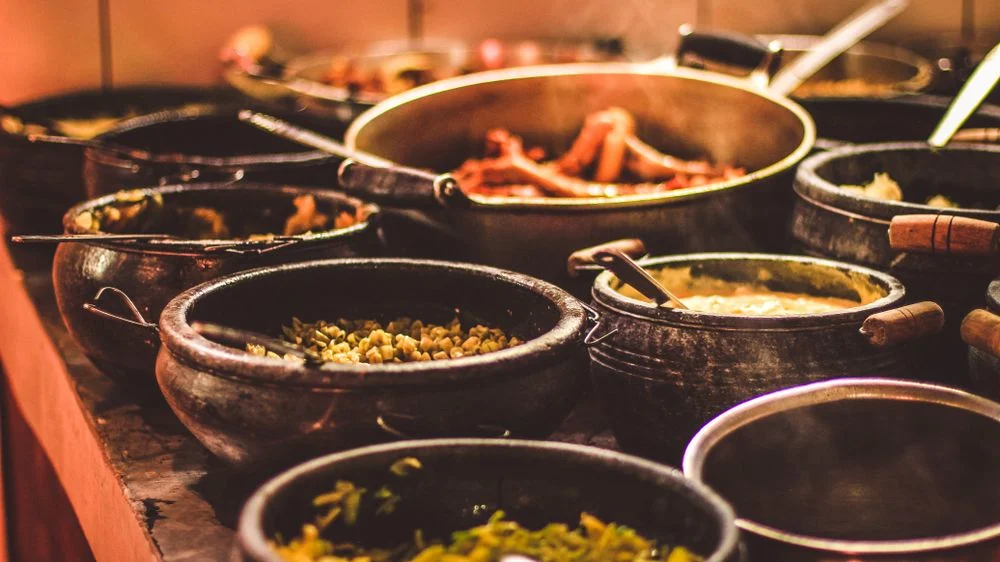
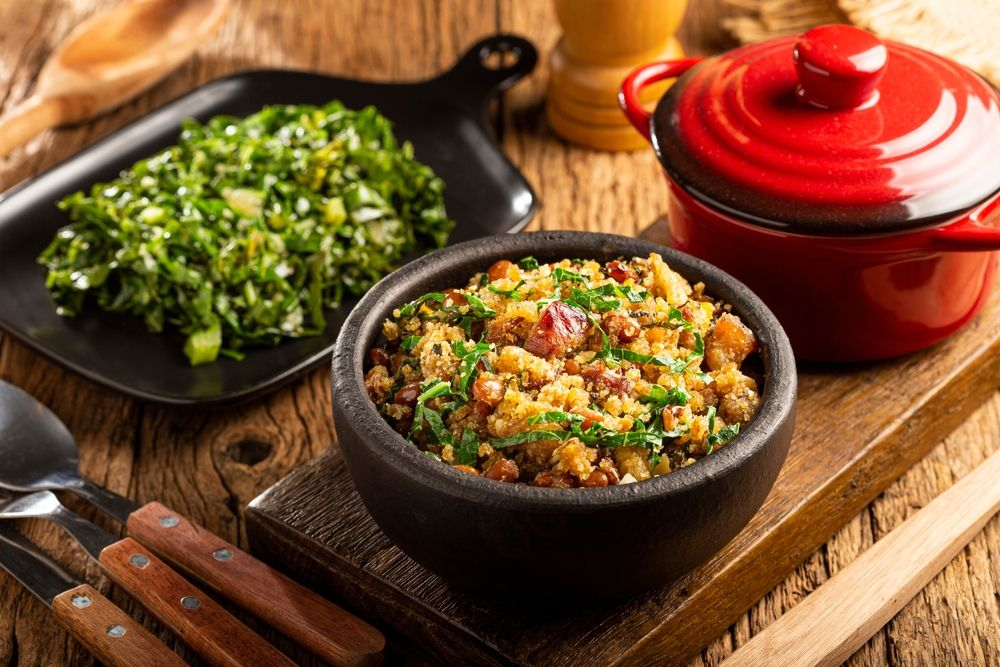
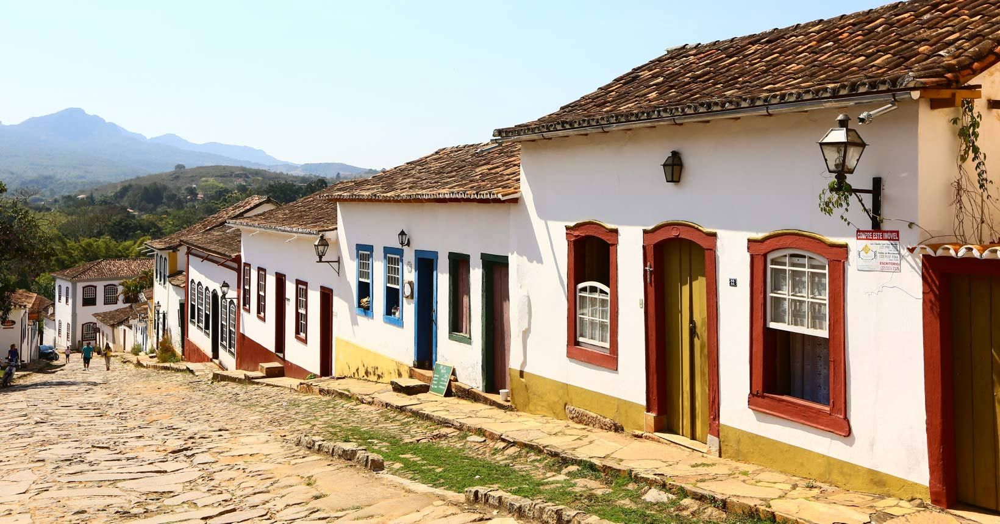
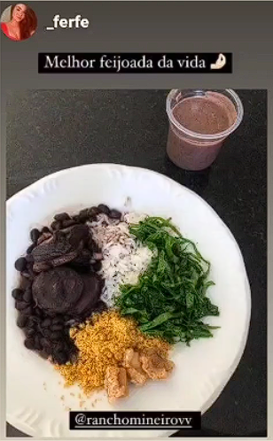

Bem-vindo ao Rancho Mineiro!
Bem-vindo ao blog do Rancho Mineiro, um espaço dedicado a compartilhar tudo sobre o nosso restaurante! Aqui, você vai conhecer mais sobre o sabor autêntico da cozinha mineira, com pratos preparados com ingredientes frescos e receitas tradicionais. Nosso blog é o ponto de encontro para quem ama a verdadeira gastronomia de Minas. Venha nos conhecer mais de perto!
Destaques
Cardápio: Explore nossos pratos tradicionais mineiros, preparados com frescor e carinho
Receitas: Aprenda a fazer os clássicos mineiros em casa com nossas receitas exclusivas.
Sobre Nós: Descubra a história do Rancho Mineiro e nossa paixão pela culinária de Minas.
Depoimentos
